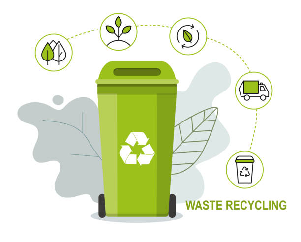

Waste management reduces the effect of waste on the environment, health, and so on. It can also help reuse or recycle resources, such as; paper, cans, glass, and so on. There is various type of waste management that include the disposal of solid, liquid, gaseous, or hazardous substances. The process of waste management involves treating solid and liquid waste.
We have to put wet wastes like leftover foods, vegetables, peels etc. in an organic dustbin which can later be used for composting Segregation of waste can reduce the garbage burden on the already overflowing landfills, thereby curbing the pollution levels.

These are the wastes created in factories and industries. Most industries dump their wastes in rivers and seas which cause a lot of pollution. Example: plastic, glass, etc.
Wet waste is all the kitchen waste that we produce. This can include vegetable peels, used tea, fruits, leftovers, etc. These are basically biodegradable organic waste that can also be composted.Wet waste is used for composting.
Dry waste comprises of things like paper, glass, plastic, cardboard, Styrofoam, rubber, metal, food packaging material, etc. Even milk cartons and packets go into a dry waste bin. But, one must rinse and dry these before you put them in the bin. Make sure whatever dry waste you discard is actually dry. Soiled packaging waste in this bin is a big no. Dry waste is recyclable but will be rejected if it is contaminated or soiled.
There are three types of dustbins for garbage collection.
The green dustbin is used for wet waste.It consists of biodegradable or compostable stuff that can be converted into manure. Material that can be disposed of in green dustbins is fruits, flowers, vegetables, papers, etc.
Blue dustbin contains non-biodegradable waste. Blue dustbin contains all the material that is required to be recycled. Material that can be thrown into blue bins is metal, chemicals, plastic, aluminium cans, etc.